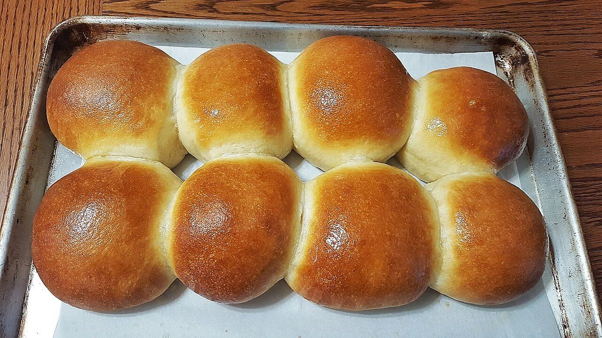
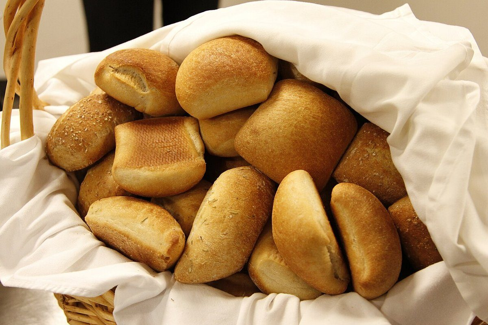

ベーカリー / 京都府宇治市
パンデュールベーカリーのご案内
京都府宇治市小倉町南浦30-30にあるベーカリー「パンデュール」のご案内ページです。営業時間やメニューなど、詳しいことは準備中。電話は 0774-84-9981、Instagramものぞいてみてください。

制作側の連想
「デュール」の響きから、番付をつくった
店名の由来は分かりません。制作側は「パンデュール」という響きから「かたい」という言葉を連想し、パンの見た目をかたい側とやわらかい側に分けた「かたさ番付」を思いつきました。制作側の連想で、お店の理念・由来とは無関係です。お店がこうしたパンを扱っているという意味でもありません。
かたさ番付(遊びの企画)
東はかたそう、西はやわらかそう。
順位は写真の見た目から制作側が付けた遊びで、根拠はありません。写真は国外・撮影地不明のフリー素材で、お店の商品ではありません。
東 かたい側かたさ番付西 やわらかい側
東
バゲット(イメージ)
細長く、外がかたそうな見た目
横綱
西
ブリオッシュ(イメージ)
まるく、ふっくらして見える
東
麦穂形のパン(イメージ)
麦穂のように切り込みが並ぶ
大関
西天板のロールパン(イメージ)

天板に並ぶつやのある丸
東
断面の気泡(イメージ)
断面に大きな気泡が見える
関脇
西
クロワッサン(イメージ)
層が重なって見える
東
粉をまとった丸いパン(イメージ)
粉をまとった丸い姿
小結
西ロールパン(イメージ)

布にくるまれた小さな丸
東
全粒粉パン(イメージ)
ごま・種の見える切り口
前頭
西
食パンとバター(イメージ)
バターを添えた角形
ご案内
お店のこと(確認できたものだけ)
| 所在地 | 〒611-0042 京都府宇治市小倉町南浦30-30 |
|---|---|
| 電話 | 0774-84-9981 |
| 営業時間 | 準備中 |
| 定休日 | 準備中 |
| ご予約 | 準備中 |
| 駐車場 | 準備中 |
| SNS | Instagram @pandule_bakery |